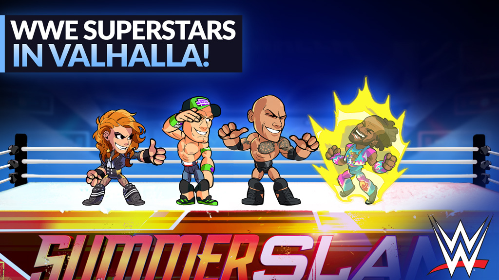

Update and Upcoming Events




Whats is Frawlsalla
Frawlsalla is a fighting game based on a 2D platform. Players can pick out one from many champions they want to play. players and can also use two-weapon out of 13 to fight each other.In Frawlsalla players are presented with many exciting game modes. the goal is to knock one's opponent off the stage, (cross the game's borders which are the four dimensions of the screen). Players can knock other characters around with weapons, fire, and other things
Dominate your enemies
Unrated / Competitive
Unrated / Competitive
Frawlsalla players can compete with others players in unrated or competitive with the champions their pick. players also can team up with their friends to queue a match. For frawlsalla competitive modes, there are 8 ranks. there's Iron, Bronze, Silver, Gold, Platinum, Diamond, Ancient and immortal. for each rank in frawlsalla are limited by points. The point in Frawlsalla is called MMP which stands for Matchmaking points.
Train Yourself
Training Mode
Training Mode
Frawlsalla provide a game mode that players can train before they play in unrated or competitive with others players. It is available to be played when Offline and can be used to better a player's skills in a variety of ways, some of which are listed below. In Training Mode, every legend, stance, most colors, and most skins are available to be played. The standard default training mode sets the player and a stationary Bot as a random legend, though this can be changed in the menu.
Play With Friend
Custom Game
Custom Game
Custom Game is one of the Modes available in Frawlsalla. It allows for players to create personal lobbies where they can change the settings and gamemode being played. Players can create a lobby for private or public use, or search through public games and join a lobby. Players can also join or spectate lobbies by entering the lobby number.